<title>비문학 대화 도우미 사용 안내</title>
<meta name="claude:viewport-fit-sides" content="cover">
<link rel="preconnect" href="https://fonts.googleapis.com">
<link rel="preconnect" href="https://fonts.gstatic.com" crossorigin>
<link rel="stylesheet" href="https://fonts.googleapis.com/css2?family=Gowun+Batang:wght@700&family=IBM+Plex+Sans+KR:wght@400;500;600&display=swap">
<style>
/* 한 줄 읽기 칼럼 + 단계 번호. 학습지처럼 차분하게, 따라 입력할 답만 눈에 띄게 */
:root {
  --paper: #f6f7f5;
  --sheet: #ffffff;
  --ink: #1d2826;
  --muted: #5b6764;
  --line: #dde3e0;
  --accent: #23524a;
  --accent-soft: #e5efec;
  --answer: #f3f7e9;
  --answer-line: #b9cf95;
  --note: #fbf5e6;
  --note-line: #e3cf9b;
  --display: "Gowun Batang", "Noto Serif KR", "AppleMyungjo", serif;
  --body: "IBM Plex Sans KR", "Apple SD Gothic Neo", "Malgun Gothic", sans-serif;
}
@media (prefers-color-scheme: dark) {
  :root:not([data-theme="light"]) {
    --paper: #141a19; --sheet: #1b2321; --ink: #e5ece9; --muted: #a2b0ac; --line: #2f3a37;
    --accent: #8cc7b9; --accent-soft: #23302d; --answer: #222d1c; --answer-line: #5f7a3d;
    --note: #2c2618; --note-line: #7a6634; color-scheme: dark;
  }
}
:root[data-theme="dark"] {
  --paper: #141a19; --sheet: #1b2321; --ink: #e5ece9; --muted: #a2b0ac; --line: #2f3a37;
  --accent: #8cc7b9; --accent-soft: #23302d; --answer: #222d1c; --answer-line: #5f7a3d;
  --note: #2c2618; --note-line: #7a6634; color-scheme: dark;
}
body {
  background: var(--paper); color: var(--ink); font-family: var(--body);
  font-size: 16px; line-height: 1.75;
  padding-left: max(16px, env(safe-area-inset-left, 0px));
  padding-right: max(16px, env(safe-area-inset-right, 0px));
  padding-block: 40px 72px;
}
main { max-width: 880px; margin: 0 auto; display: grid; gap: 48px; }
.prose { max-width: 680px; }
h1, h2 { font-family: var(--display); font-weight: 700; text-wrap: balance; line-height: 1.35; margin: 0; }
h1 { font-size: clamp(1.8rem, 4vw, 2.4rem); }
h2 { font-size: 1.45rem; }
h3 { font-size: 1.05rem; font-weight: 600; margin: 0; }
p { margin: 0; }
.kicker { font-size: .78rem; letter-spacing: .08em; color: var(--accent); font-weight: 600; }
header { display: grid; gap: 14px; }
header .lead { color: var(--muted); max-width: 640px; }
section { display: grid; gap: 20px; }
.facts { display: grid; grid-template-columns: repeat(auto-fit, minmax(180px, 1fr)); gap: 12px; }
.fact { background: var(--sheet); border: 1px solid var(--line); border-radius: 10px; padding: 14px 16px; display: grid; gap: 2px; }
.fact small { color: var(--muted); font-size: .8rem; }
.fact strong { font-weight: 600; }
.url { font-family: ui-monospace, "SF Mono", Menlo, monospace; font-size: .95rem; word-break: break-all; }
ol.steps { list-style: none; margin: 0; padding: 0; display: grid; gap: 36px; counter-reset: step; }
ol.steps > li { counter-increment: step; display: grid; grid-template-columns: 40px minmax(0, 1fr); gap: 14px; }
ol.steps > li::before {
  content: counter(step); width: 32px; height: 32px; border-radius: 50%;
  background: var(--accent); color: var(--sheet); font-weight: 600; font-size: .95rem;
  display: grid; place-items: center; margin-top: 2px; font-variant-numeric: tabular-nums;
}
.step { display: grid; gap: 12px; min-width: 0; }
.step .tag { font-size: .78rem; color: var(--accent); background: var(--accent-soft); border-radius: 999px; padding: 2px 10px; justify-self: start; font-weight: 500; }
.answer { background: var(--answer); border: 1px solid var(--answer-line); border-radius: 10px; padding: 12px 14px; display: grid; grid-template-columns: minmax(0, 1fr) auto; gap: 12px; align-items: start; }
.answer .label { font-size: .75rem; color: var(--muted); display: block; }
.answer .text { font-weight: 500; }
.answer.spare { background: var(--sheet); border-style: dashed; }
button.copy {
  font: inherit; font-size: .82rem; border: 1px solid var(--answer-line); background: var(--sheet); color: var(--ink);
  border-radius: 8px; padding: 4px 10px; cursor: pointer; white-space: nowrap;
}
button.copy:hover { border-color: var(--accent); }
button.copy:focus-visible { outline: 2px solid var(--accent); outline-offset: 2px; }
figure { margin: 0; display: grid; gap: 6px; }
figure img { border: 1px solid var(--line); border-radius: 8px; display: block; width: 100%; height: auto; }
figcaption { font-size: .85rem; color: var(--muted); }
.note { background: var(--note); border: 1px solid var(--note-line); border-radius: 10px; padding: 14px 16px; display: grid; gap: 6px; }
.note h3 { font-size: .95rem; }
ul.plain { margin: 0; padding-left: 1.2em; display: grid; gap: 6px; }
.part { border-top: 1px solid var(--line); padding-top: 32px; }
kbd { font-family: var(--body); font-size: .85em; border: 1px solid var(--line); border-bottom-width: 2px; border-radius: 5px; padding: 0 6px; background: var(--sheet); }
.btn-name { font-weight: 600; color: var(--accent); }
a.survey { display: inline-block; font-weight: 600; color: var(--sheet); background: var(--accent); border-radius: 8px; padding: 6px 14px; text-decoration: none; }
a.survey:focus-visible { outline: 2px solid var(--ink); outline-offset: 2px; }
@media (max-width: 480px) {
  ol.steps > li { grid-template-columns: 1fr; }
  .answer { grid-template-columns: 1fr; }
  button.copy { justify-self: start; }
}
@media (prefers-reduced-motion: no-preference) { button.copy { transition: border-color .15s; } }
</style>

<main>
  <header>
    <span class="kicker">국어 선생님 시연 · 사용 안내</span>
    <h1>비문학 대화 도우미, 이렇게 써 보세요</h1>
    <p class="lead">학생이 지문을 문단마다 요약하고 문제를 푸는 동안, AI가 질문을 던져 스스로 고치게 돕는 도구입니다. 상위권 중학생이 고등학교 모의고사 비문학에 도전하는 상황을 생각하고 만들었습니다. 먼저 아래 안내를 따라 한 지문을 끝까지 해 보시고, 그다음에는 자유롭게 써 보세요.</p>
    <div class="facts">
      <div class="fact"><small>접속 주소</small><strong class="url">https://dialogue.cogaxis.net/dialogue/lab</strong></div>
      <div class="fact"><small>튜토리얼 지문</small><strong>정보 비대칭과 사상의 자유 시장 이론 (5문단 + 13번)</strong></div>
      <div class="fact"><small>걸리는 시간</small><strong>튜토리얼 15분 안팎, 자유 사용은 편하신 만큼</strong></div>
    </div>
  </header>

  <section class="prose">
    <div class="note">
      <h3>미리 알아 두시면 좋은 점</h3>
      <ul class="plain">
        <li>개발 중인 화면이라 위쪽에 영어 표시나 <span class="btn-name">단계별 판정·메모</span>, <span class="btn-name">응답 평가</span> 같은 개발용 버튼이 보입니다. 열지 않으셔도 됩니다. 학생 화면에는 나오지 않습니다.</li>
        <li>답을 보내면 AI가 읽고 답하기까지 <strong>10~40초</strong> 걸립니다.</li>
        <li>같은 답을 넣어도 AI의 말은 조금씩 달라집니다. 아래 사진과 문구가 똑같지 않아도 괜찮습니다.</li>
        <li>가끔 안내와 다른 질문이 나오면, 단계마다 적어 둔 <strong>예비 답</strong>을 넣어 주세요.</li>
      </ul>
    </div>
  </section>

  <section class="part">
    <span class="kicker">1부 · 문단 요약 대화</span>
    <h2>문단마다 요약을 쓰면, AI가 확인하고 질문합니다</h2>
    <p class="prose">아래 답을 <span class="btn-name">복사</span>해서 오른쪽 입력 칸에 붙여 넣고 <span class="btn-name">보내기</span>를 누르시면 됩니다. 학생이 실제로 쓸 법한 짧은 메모 형식으로 적어 두었습니다.</p>

    <ol class="steps">
      <li><div class="step">
        <h3>지문을 고르고 시작하기</h3>
        <p>접속하면 지문 목록이 나옵니다. <strong>정보 비대칭과 사상의 자유 시장 이론</strong> 오른쪽의 <span class="btn-name">시작</span>을 누르세요. 왼쪽에 원문, 오른쪽에 대화 칸이 열립니다.</p>
        <figure>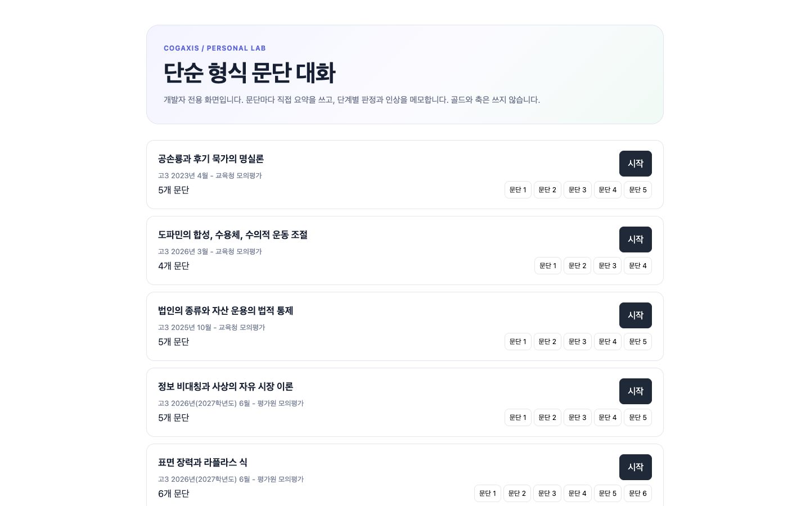<figcaption>지문 목록. 네 번째 카드의 [시작]을 누릅니다.</figcaption></figure>
      </div></li>

      <li><div class="step">
        <span class="tag">빠진 내용을 묻는 질문</span>
        <h3>문단 1: 일부러 조금 덜 쓰기</h3>
        <p>정부가 <em>어떻게</em> 개입하는지를 빼고 씁니다. AI가 빠진 부분을 질문으로 짚습니다.</p>
        <div class="answer"><div><span class="label">첫 요약</span><span class="text">정보비대칭-&gt;역선택 문제: 정보 적게 가진 주체가 낮은 품질 상품을 비싸게 선택 -&gt; 정부 개입</span></div><button class="copy" type="button">복사</button></div>
        <figure>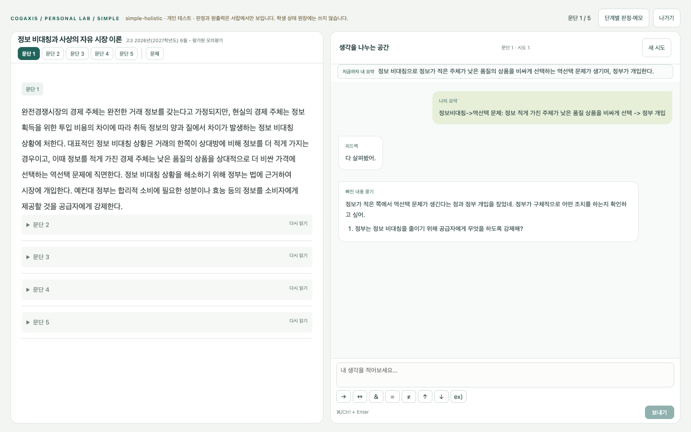<figcaption>"빠진 내용 묻기" 말풍선으로 정부의 조치를 묻습니다.</figcaption></figure>
        <div class="answer"><div><span class="label">질문에 대한 답</span><span class="text">정부가 공급자한테 성분이나 효능 같은 정보를 소비자에게 알려 주도록 강제해.</span></div><button class="copy" type="button">복사</button></div>
        <figure>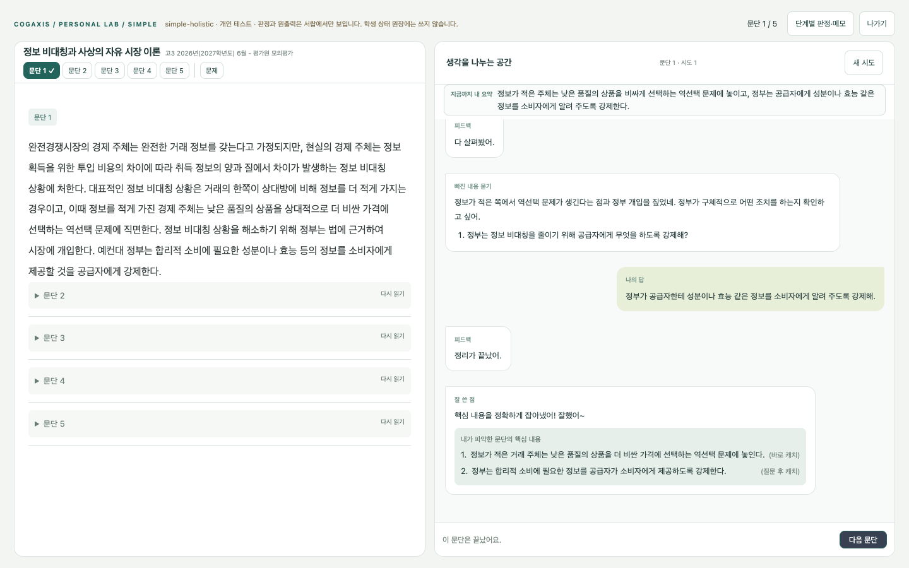<figcaption>보충하면 "잘 쓴 점"과 함께 이 문단의 핵심이 정리됩니다. 질문을 받고 잡은 핵심에는 "질문 후 캐치"가 붙습니다.</figcaption></figure>
        <p>질문 없이 바로 "잘 쓴 점"이 나오기도 합니다. 그때는 그대로 <span class="btn-name">다음 문단</span>을 누르세요.</p>
      </div></li>

      <li><div class="step">
        <span class="tag">바로 칭찬</span>
        <h3>문단 2~4: 잘 쓴 요약은 바로 넘어갑니다</h3>
        <p>핵심을 다 담으면 AI는 끼어들지 않고 확인만 합니다. 문단마다 <span class="btn-name">다음 문단</span>을 눌러 이어 가세요.</p>
        <div class="answer"><div><span class="label">문단 2</span><span class="text">생성형 AI로 허위·과장 광고 증가 -&gt; AI 사용 제품·서비스 사업자에게 표시 의무 강제 -&gt; 광고 제공자, 플랫폼에도 의무 부여 주장 -&gt; 사회적 주장에도 개입 여부 논란</span></div><button class="copy" type="button">복사</button></div>
        <div class="answer spare"><div><span class="label">문단 2 예비 답 (질문이 나오면)</span><span class="text">생성형 AI 때문에 진짜인지 알기 어려운 허위·과장 광고가 늘었어.</span></div><button class="copy" type="button">복사</button></div>
        <figure>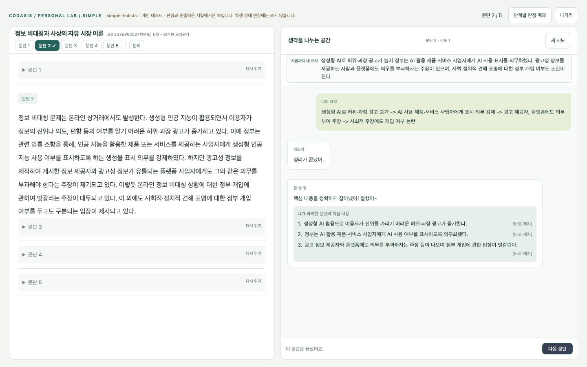<figcaption>문단 2. 핵심 세 가지에 모두 "바로 캐치"가 붙었습니다.</figcaption></figure>
        <div class="answer"><div><span class="label">문단 3</span><span class="text">사상의 자유시장 이론: 경쟁으로 진위 판단. 정부 개입 안됨. 미국 대법원, 헌법재판소 지지 입장.</span></div><button class="copy" type="button">복사</button></div>
        <div class="answer spare"><div><span class="label">문단 3 예비 답 (질문이 나오면)</span><span class="text">미국 대법원은 명백하고 현존하는 위험이 아닌 표현은 보호하고 플랫폼엔 자율 규제를 적용해. 우리 헌재도 의견 경쟁으로 해결해야 한다고 봐.</span></div><button class="copy" type="button">복사</button></div>
        <figure>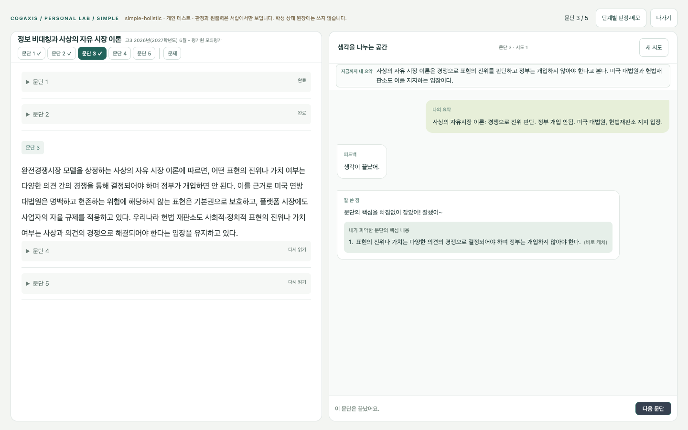<figcaption>문단 3.</figcaption></figure>
        <div class="answer"><div><span class="label">문단 4</span><span class="text">비판론. 참정보는 적고, 허위 정보 많음 -&gt; 경쟁 안됨 &amp; 여론 왜곡 가능 -&gt; 플랫폼과 정부의 공동 규제 주장</span></div><button class="copy" type="button">복사</button></div>
        <div class="answer spare"><div><span class="label">문단 4 예비 답 (질문이 나오면)</span><span class="text">진실한 정보는 적게, 허위·왜곡 정보는 많이 공급돼서 의견 경쟁이 안 되고, 정책 담당자가 조작된 정보를 시민 의견으로 오인할 수 있어.</span></div><button class="copy" type="button">복사</button></div>
        <figure>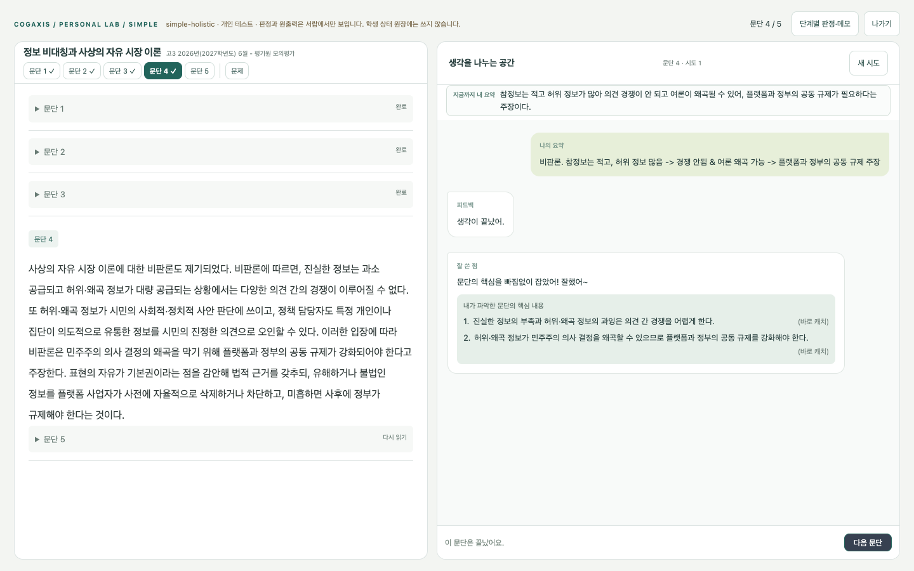<figcaption>문단 4.</figcaption></figure>
      </div></li>

      <li><div class="step">
        <span class="tag">틀린 곳을 되묻는 질문</span>
        <h3>문단 5: 일부러 하나 틀리기</h3>
        <p>헌법재판소 다수 의견의 결론을 반대로 씁니다. AI는 정답을 바로 알려 주지 않고, 틀린 곳을 학생이 다시 보도록 질문합니다.</p>
        <div class="answer"><div><span class="label">첫 요약 (틀린 곳 하나)</span><span class="text">실명확인 사건에서 다수 의견은 제재 법률이 합헌이라고 했고, 소수 의견은 허위·왜곡 정보는 토론으로 고치기 어렵다고 봤어.</span></div><button class="copy" type="button">복사</button></div>
        <figure>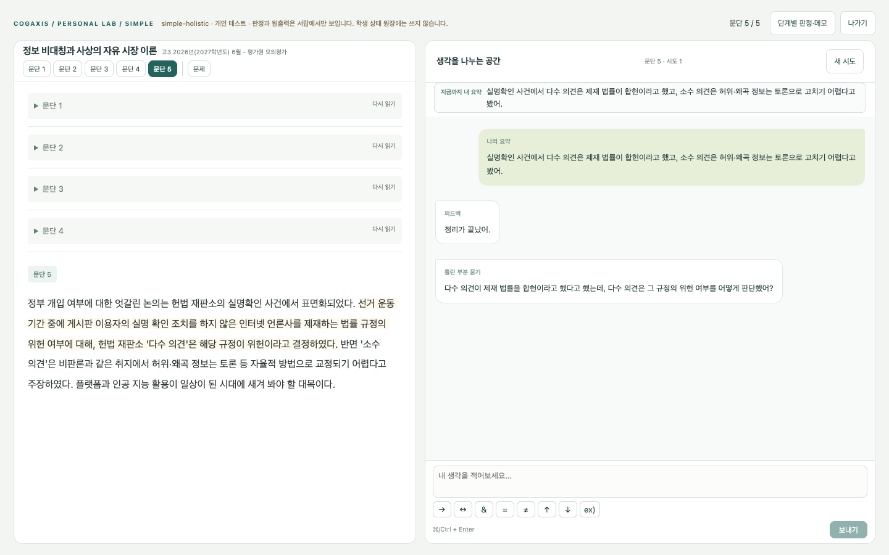<figcaption>"틀린 부분 묻기" 말풍선. 원문에서 근거 문장이 옅게 칠해집니다.</figcaption></figure>
        <div class="answer"><div><span class="label">고친 답</span><span class="text">다시 보니 다수 의견은 그 규정이 위헌이라고 했어.</span></div><button class="copy" type="button">복사</button></div>
        <figure>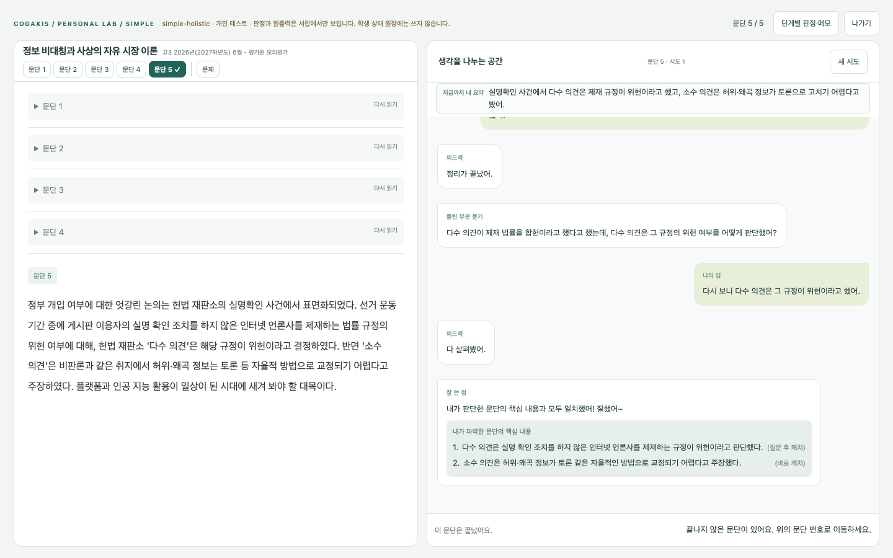<figcaption>스스로 고치면 칭찬과 함께 핵심이 정리됩니다.</figcaption></figure>
        <p>틀린 곳이 두 군데 이상이면, AI는 질문하지 않고 바로잡아 준 뒤 문단을 마칩니다.</p>
      </div></li>

      <li><div class="step">
        <h3>문제로 넘어가기</h3>
        <p>다섯 문단이 모두 끝나면 아래에 <span class="btn-name">문제 풀기</span>가 나옵니다. 누르면 같은 지문의 13번 문제가 열립니다.</p>
        <figure>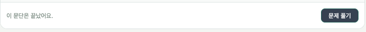</figure>
      </div></li>
    </ol>
  </section>

  <section class="part">
    <span class="kicker">2부 · 문제 풀이 대화</span>
    <h2>오답을 고르면, 정답 대신 질문이 돌아옵니다</h2>
    <p class="prose">왼쪽은 지문, 가운데는 문제와 선지, 오른쪽은 대화 칸입니다. 선지는 가운데에서 직접 눌러 고릅니다. 13번은 <strong>적절하지 않은 것</strong>을 고르는 문제이고 정답은 ⑤번입니다. 튜토리얼에서는 일부러 ②번을 먼저 고릅니다.</p>

    <ol class="steps">
      <li><div class="step">
        <h3>②번을 고르고 이유 쓰기</h3>
        <p>가운데 선지에서 <strong>②번</strong>을 누르고, 오른쪽 칸에 이유를 붙여 넣은 뒤 <span class="btn-name">제출</span>을 누르세요.</p>
        <div class="answer"><div><span class="label">②번 선택 이유</span><span class="text">갑은 인공지능을 사용해서 광고했으니 제재 대상이야. 그래서 ②는 적절하지 않아.</span></div><button class="copy" type="button">복사</button></div>
        <figure>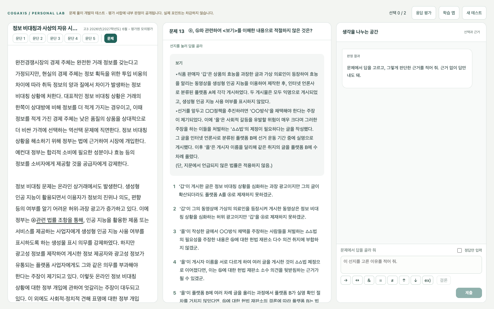<figcaption>문제 화면.</figcaption></figure>
      </div></li>

      <li><div class="step">
        <span class="tag">틀린 생각을 되묻는 질문</span>
        <h3>질문에 답하기</h3>
        <p>AI는 "정답이 아니야"라고만 하고, 생각이 어긋난 지점을 질문합니다. 이 문제에서는 ⓐ의 의무가 <em>누구에게</em> 부과되는지를 묻습니다. 지문의 해당 부분이 칠해집니다.</p>
        <figure>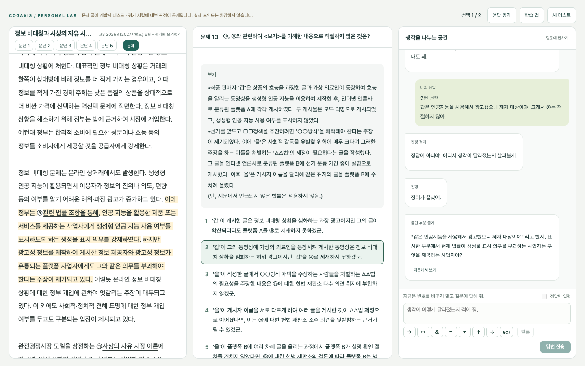<figcaption>"틀린 부분 묻기". 지문의 ⓐ 주변이 노랗게 칠해졌습니다.</figcaption></figure>
        <div class="answer"><div><span class="label">질문에 대한 답</span><span class="text">인공 지능을 활용한 제품이나 서비스를 제공하는 사업자</span></div><button class="copy" type="button">복사</button></div>
        <p>붙여 넣고 <span class="btn-name">답변 전송</span>을 누르세요.</p>
      </div></li>

      <li><div class="step">
        <h3>다시 고르기</h3>
        <p>고친 답이 맞으면 <span class="btn-name">다시 선택</span>과 <span class="btn-name">코칭 보기</span>가 나옵니다. <span class="btn-name">다시 선택</span>을 누르고 <strong>⑤번</strong>을 고른 뒤, 이유를 붙여 넣고 <span class="btn-name">제출</span>하세요.</p>
        <figure>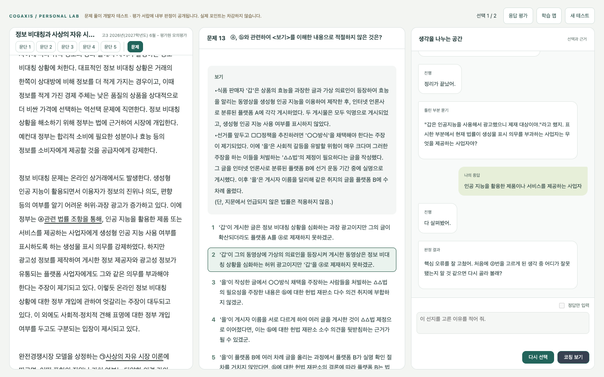<figcaption>"핵심 오류를 잘 고쳤어" 뒤에 두 버튼이 나옵니다.</figcaption></figure>
        <div class="answer"><div><span class="label">⑤번 선택 이유</span><span class="text">헌재 다수 의견이 실명 확인 안 한 언론사를 제재하는 규정을 위헌이라고 했으니까 B는 제재를 안 받아.</span></div><button class="copy" type="button">복사</button></div>
      </div></li>

      <li><div class="step">
        <span class="tag">정답과 근거 확인</span>
        <h3>풀이 마치기</h3>
        <p>정답을 골랐어도 AI는 이유까지 확인합니다. 근거가 맞으면 "근거도 정확해"로 끝납니다. 마지막 안내처럼 선지를 누르면 출제자가 함정을 어떻게 만들었는지도 볼 수 있습니다.</p>
        <figure>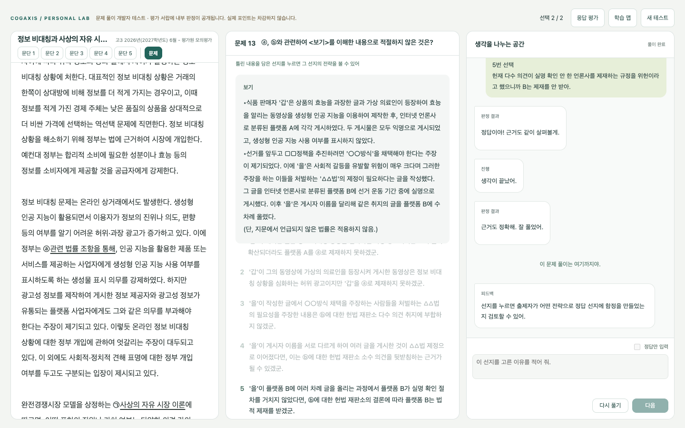<figcaption>풀이 완료.</figcaption></figure>
      </div></li>
    </ol>
  </section>

  <section class="part prose">
    <span class="kicker">3부 · 자유 사용과 설문</span>
    <h2>이제 편하게 써 보세요</h2>
    <p>지문 목록으로 돌아가(<span class="btn-name">나가기</span> 또는 주소 다시 열기) 다른 지문을 골라 보세요. 이번에는 학생이 되었다고 생각하고 자유롭게 쓰시면 됩니다. 일부러 엉뚱한 답, 반만 맞는 답, 아주 짧은 답을 넣어 보셔도 좋습니다. AI가 어색하게 반응하는 곳을 찾는 것도 이번 시연의 목적입니다.</p>
    <div class="note">
      <h3>막히셨을 때</h3>
      <ul class="plain">
        <li><span class="btn-name">평가 다시 시도</span> 또는 <span class="btn-name">다시 시도</span> 버튼이 나오면 한 번 더 눌러 주세요. AI가 잠깐 응답하지 못한 경우입니다.</li>
        <li>화면이 열리지 않거나 "찾을 수 없습니다"가 나오면 서버가 잠시 꺼진 것입니다. 아래 연락처로 알려 주세요.</li>
      </ul>
    </div>
    <div class="note">
      <h3>다 써 보신 뒤 (5분 설문)</h3>
      <p><a class="survey" href="https://docs.google.com/forms/d/e/1FAIpQLScX58coYU9W8R773Q848BgGDbXYHtd3Pyb_JlOm_U1gYJQPOg/viewform?usp=sharing&amp;ouid=105413563928273692002" target="_blank" rel="noopener">설문 열기 (구글 폼, 새 탭)</a></p>
      <p>설문 마지막에 쓰시던 화면의 주소창 주소를 붙여 넣는 칸이 있습니다. 기록을 찾아볼 때만 씁니다.</p>
      <p>연락처(이메일): <strong class="url">kimghootae@gmail.com</strong></p>
    </div>
  </section>
</main>

<script>
document.querySelectorAll('.answer').forEach(box => {
  const button = box.querySelector('button.copy');
  const text = box.querySelector('.text');
  button.addEventListener('click', () => {
    const done = () => { button.textContent = '복사됨'; setTimeout(() => { button.textContent = '복사'; }, 1500); };
    const fallback = () => {
      const range = document.createRange(); range.selectNodeContents(text);
      const sel = window.getSelection(); sel.removeAllRanges(); sel.addRange(range);
      button.textContent = '선택됨 · ⌘C';
      setTimeout(() => { button.textContent = '복사'; }, 2500);
    };
    try { navigator.clipboard.writeText(text.textContent).then(done, fallback); } catch { fallback(); }
  });
});
</script>
